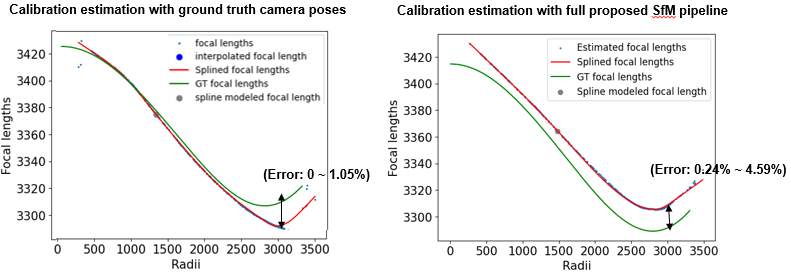
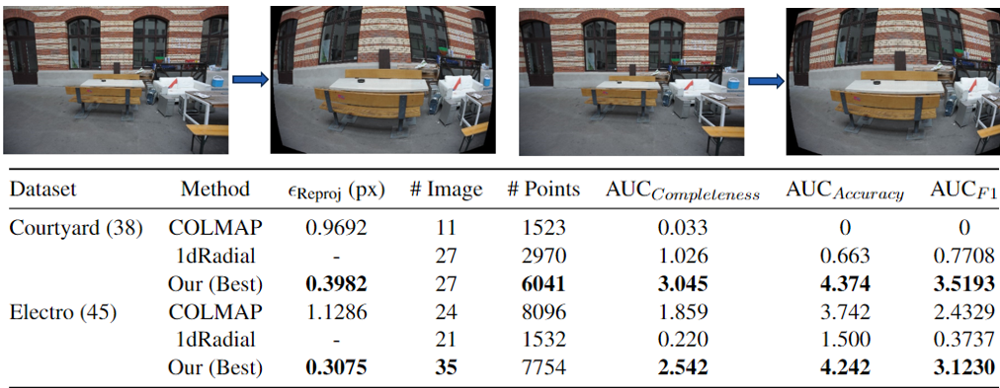
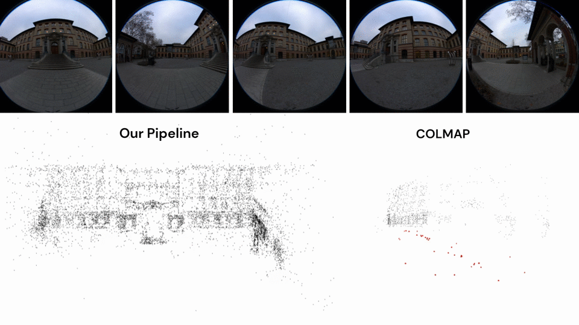
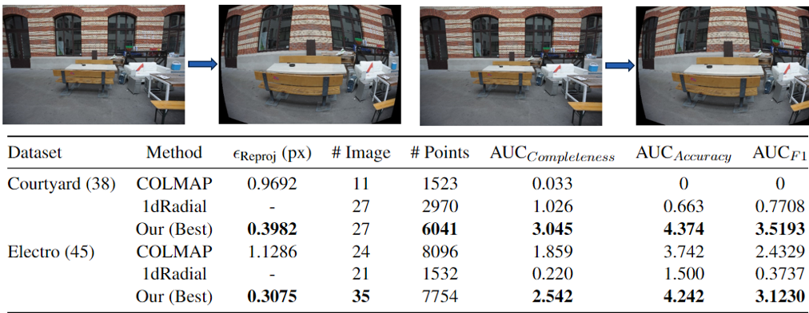

Overview
Our SfM pipeline initializes with radial constraints, after upgrading to a 6 dof camera pose with implicit distortion model,
a pixel-wise calibration map for each camera could be recovered or updated. Based on the completeness of this calibration map,
we can choose to perform either a radial triangulation, or a standard triangulation with the intrinsics recovered. Full bundle adjustment is enabled after the triangulation procedure.
The pixel-wise calibration map retrieved from the implicit distortion method was generically modeled by a consecutive outlier assumption.
Results

Retrieved Calibration Map

The evaluation of the reconstruction and pose estimation on ETH3D benchmark, compared with both COLMAP and 1dRadialSfM.

Evaluation on manually distorted ETH3D benchmark datasets, highlighting our pipelines' robustness to radial distortions

Visual results on fisheye-lens filmed ETH facade
Visual results on fisheye-lens filmed Amsterdam square
